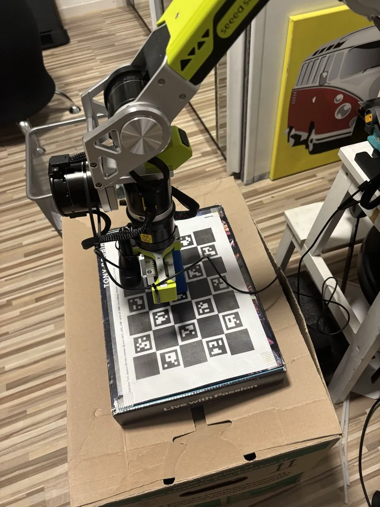
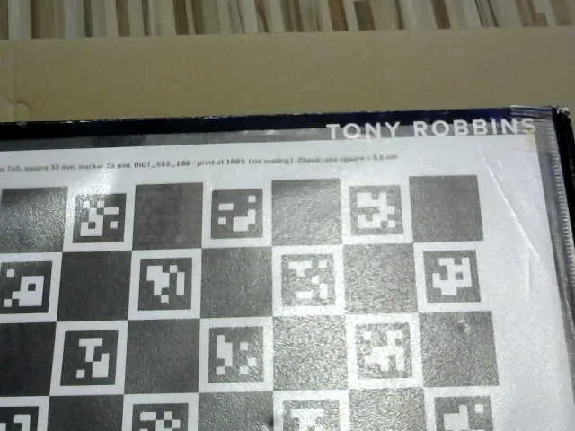
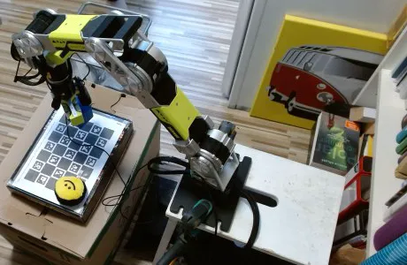

Tag 4 · Sonntag, 22. November 2026
Von der ersten guten Kalibrierung zum ersten echten Griff
Eine Nacht voller Abstürze und Kalibrierung, dann der erste echte Griff am Sonntagmorgen – ein Watchdog-Absturz, die Soft-Lower-Lösung und der Schwenk zu festen Kamerahaltern und SmolVLA.

Eine Nachtsession direkt nach Tag 3: Der Arm stürzte immer wieder ab, also haben wir zuerst die Ursachen gesucht – und am Ende die Kalibrierung bekommen, der wir seit zwei Tagen hinterherlaufen. Alle Armbewegungen waren Davids eigene Läufe.
🛠Was wir gemacht haben
- v3.9.6 – der Lauf um 00:23 stürzte bei Pose 7 ab. Diesmal kein Kabel: Der gemeinsame USB-2.0-Hub hing etwa eine Sekunde, beide Kameras und alle 7 Motor-Feeds froren gleichzeitig ein (8 GB RAM im Swap, GUI bei rund 200 % CPU). Unsere eigene Regel „Feedback 1 s eingefroren → Drehmoment aus“ schaltete dann die Motoren ab. Jetzt halten wir das Drehmoment und senden das letzte Ziel bis zu 3 s lang erneut, während wir weiter abfragen.
- v3.9.7 – der Lauf um 00:33 sackte durch. Der Treiber des Schulter-Lift-Motors erhitzte sich von 32 auf 78 °C beim Halten von etwa 13 Nm und meldete Fehler 0x12 (Überstrom + HALL); das Gelenk wurde schlaff. Jetzt schaltet jeder Motorfehler alle Motoren ab. Eine Temperaturüberwachung warnt bei 60 °C, pausiert ab 64 °C in der Startpose, bis es unter 52 °C ist, und stoppt weich bei 70 °C. Bei Kameraverlust wartet der Arm in der Startpose und versucht es erneut. Das Sync-Skript entfernt außerdem private IPs, Pfade und Inventarnummern vor dem Push. Code: Commit 95f2dc4; weitere Änderungen kommen mit einer englischen Oberfläche in v3.9.8.
- Der Kamera-Tausch im Detail. Die Logitech C270 läuft mit etwa 30 fps bei 640×480; bei 1280×720 unkomprimiert schafft sie am gemeinsamen Hub nur 0–1,5 fps. Fester Fokus, scharf ab etwa 30 cm. Die Greiferbacke verdeckte den unteren Bildteil, bis David die Kamera nach oben kippte.

💭Denkweise
Unser Kalibrier-Planer ging von der alten Innomaker-Geometrie aus (Kamera schaut entlang der Finger) und zielte mit den Fingern aufs Brett – die anders montierte C270 sah deshalb nur den Brettrand. Unsere Lehre: nicht von einem idealisierten Kamera-Aufbau planen, sondern von einer Pose ausgehen, die das Ziel schon sieht, und darum herum variieren.
🏆Wins
- 02:48 – 13 von 20 Posen gut, übernommen. Intrinsics der Handgelenkkamera 0,463 px RMS, Reprojektion über die ganze Kette 1,56 px, Hand-Auge AX=XB Median 0,64° / 3,7 mm, Streuung der Brettpose 1,7 mm RMS, Offset Kamera–Greifer [2,9; −8,3; 26,3] mm. Die Übersichtskamera liegt bei 0,43 px.
- Der „Jitter“-Planer funktioniert: 20 kleine Gelenk-Offsets um eine angelernte Pose, die das Brett sieht, nach den ersten Fehlschlägen halbiert. David hat die Pose um 02:47 neu angelernt.

•Nachtbau und ein ruhiger Morgen (03:05–08:14)
Nach 03:05 gab es keine Armbewegung. In etwa 35 Minuten (rund 0,6 h) baute der Humanoid-Project-Bot grasp.sh "grasp blue cube" – einen Farbflecken-Würfeldetektor, einen Planer und einen Ausführer – sowie die neue Teleop-Oberfläche 3.10 als eigene App. Beides lief in der Simulation durch. Dann ruhte das Projekt bis 08:14.

•Morgen: der erste echte Griff (08:14–11:41, etwa 3,5 h)
- 08:20: Der Trockenlauf (
--check) fand den blauen 51-mm-Würfel (Konfidenz 0,63) und plante 17 Schritte in etwa 2 Minuten. Der simulierte Griff fuhr alle 17 Bewegungen in etwa 106 s. - 09:01 – erster echter Griff ERFOLGREICH! Der Greifer schloss sich bei 165,9° um den blauen Würfel, hielt ihn durch das Anheben, ließ ihn los und fuhr zurück in die Ruhelage. Schön war es nicht: Die Backen griffen über eine Kante (falsches Würfel-Yaw aus der Übersichtskamera,
wrist_rolletwa 51°), die Bewegung ruckelte (Vollstopp an allen 17 Wegpunkten bei 1,5–6°/s), und das Greifer-Öffnen bleibt bei 226° hängen. - 09:07: Wir haben Korrekturen freigegeben: durchgehende Trajektorie, höhere Geschwindigkeiten und eine Yaw-Prüfung mit der Handgelenkkamera.

💥Fails
- Zwei Abstürze (siehe oben) – der erste durch einen USB-Hänger plus unsere übereifrige Sicherheitsregel, der zweite durch ein überhitztes Gelenk.
- Vier Kalibrierläufe (02:21–02:43) fanden zu wenige Brettecken. Ursachen: falsche Aufbau-Geometrie im Planer, die Greiferbacke verdeckte Bildteile, und kleine Bilder. Um 02:41 war nur 1 von 20 Posen gut.
- Ein stiller Bug: Kalibrierbilder wurden auf 480×360 (die Größe der geteilten Frames) statt 640×480 verkleinert. Behoben.
- Die GUI brauchte außerdem
ulimit -n 4096(„too many open files“). - 09:32 – der Watchdog schaltete das Drehmoment ab, der Arm fiel aufs Brett. Die Lösung ist ein sanftes Absenken vor dem Abschalten (etwa 1 s, höchstens 10°/s, dann Motoren aus; live um 10:13). Der Absturz verschob die Halterung der Handgelenkkamera um etwa 23° / 50 mm und stieß die Übersichtskamera an, sodass alle Ziele etwa 70 mm daneben lagen.
- 10:37 / 10:44: Zwei Abbrüche („wrist camera: object 40/63 mm from plan“) gingen auf die verschobenen Kameras zurück. Wir haben die Handgelenk-Prüfung vorerst abgeschaltet, eine Drift-Prüfung der Übersichtskamera eingebaut (die Planung verweigert, wenn sich das Brett um mehr als 12 px bewegt hat) und einen Recalibrate-Button (0,39 px Reprojektion).
- 11:08: Eine 1-Punkt-Touch-Korrektur (dx −59,8, dy +8,7 mm) drückte den Fehler von etwa 60 mm auf 2–3 cm. Ein 2-Punkt-Fit um 11:18 war schlecht (6,67° Rotation, ±10 mm Residuen) und wurde zurückgenommen. Neue Werkzeuge: ein Touch-Kalibrierskript, ein Handgelenk-Check und eine Touch-calibrate-Karte in der GUI (vorbereitet, noch nicht live).
- 11:27 / 11:30: Die Position stimmte, aber die Backen gingen auf die Würfelecken (falsches Yaw). Die Handgelenk-Yaw-Prüfung wieder einzuschalten scheiterte: Der Würfel füllte das Handgelenkbild, wurde am Rand abgeschnitten, und der Planer fiel auf sein geplantes Yaw zurück.
- Eine Warnung aus der Nacht bleibt: Die Tisch-Kalibrierung der Übersichtskamera muss aufgefrischt werden.
•Weitere Wins
- 11:25 – Hand-Auge-Autokalibrierung wieder OK: 7 von 7 Ansichten, Reprojektion über die Kette 0,91 px, AX=XB-Translation Median 14,3 mm (max. 22 mm). Wir mussten erst eine Zielpose anlernen, weil das Brett zunächst nur teilweise sichtbar war (9 von 24 Ecken).
- 11:30 – die Sicherheitsregel funktioniert: Der
shoulder_lift-Treiber erreichte 70 °C (60 °C um 11:30:23) und löste MotorHot aus – und der Arm zog sich sicher zurück, statt durchzusacken.
•Umdenken (11:32–11:41)
Der handcodierte Griff hängt an einer fragilen Kalibrierkette, und mit Klebeband befestigte Kameras zerstören sie nach jedem Stoß. Also haben wir entschieden:
- Zuerst die Kameras fest montieren. 3D-gedruckte Innomaker-Handgelenkhalter (am 15.11. über Craftcloud bestellt) kommen zwischen dem 23. und 27.11. – zu verwenden mit einem kurzen USB-Kabel mit Zugentlastung – und die Übersichtskamera wird festgeklemmt.
- Vorerst keine Tiefenkamera. Zu teuer (Orbbec Gemini 305 etwa 289 €, RealSense D405 etwa 489 €), und RealSense gilt laut LeRobot-Doku auf macOS als instabil.
- Nächste Richtung: etwa 40 Teleop-Demos aufnehmen und SmolVLA feintunen, statt weiter Zeit in handcodierte Kalibrierung zu stecken.
📌Learnings
- Kalibrier-Planer müssen den echten Kamera-Aufbau abbilden – oder besser um eine angelernte Pose planen, die das Ziel schon sieht.
- Die ganze Bild-Pipeline Ende zu Ende prüfen. Ein versteckter Downscale hat uns Stunden gekostet.
- Motortemperaturen bei langem Halten beobachten. 13 Nm über Minuten kochen einen Treiber; eine Sicherheitsregel, die zurückzieht statt abzuschalten, hat den Arm gerettet.
- Vor dem Abschalten sanft absenken. Ein harter Stopp lässt den Arm fallen – und der Aufprall hat die Kalibrierung zerstört.
- Feste Halterungen schlagen clevere Software. Mit Klebeband befestigte Kameras driften bei jedem Stoß, und jede Drift kostet eine Neukalibrierung.
- Das ACT-Training braucht neue Demos mit der C270, weil die alten Demos die alte Kamera nutzen.
🔗Quellen
Seeeds reBot-Kamerahalter, die LeRobot-Kameradoku und die SO-ARM100-Handgelenkhalter waren unsere Referenzen für den Halterungsplan.
</>Code-Stand
main steht weiter bei v3.9.7 (95f2dc4). Der neue Greif-Ablauf (grasp.sh), die Oberfläche 3.10 (englische UI), die Soft-Lower-Sicherung (3.10.2) und die Touch-Kalibrierwerkzeuge liegen nur auf dem Roboter-Laptop und sind noch nicht nach main gepusht.